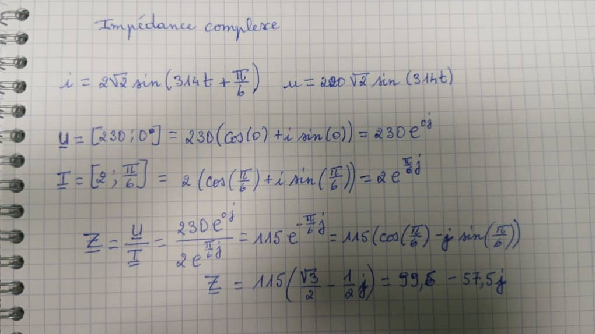
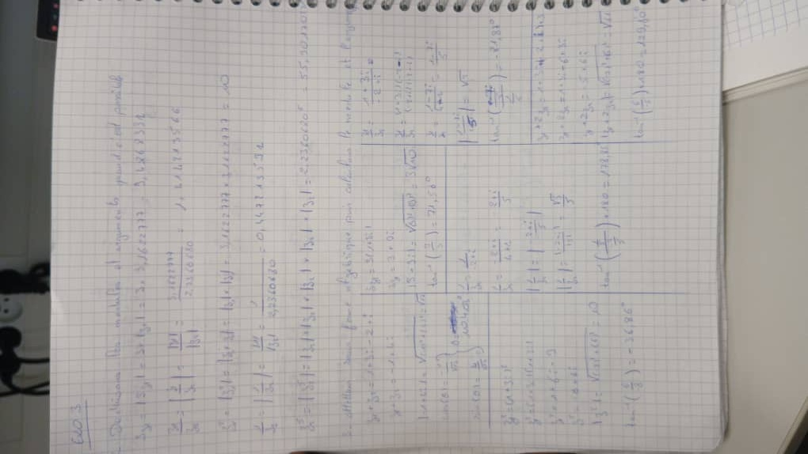

Connecter
Déployer des architectures réseaux de communication et maîtriser l'ingénierie physique du signal. Ce pôle certifie une double expertise en configuration de systèmes de télécommunications/ToIP et en étude physique approfondie de la transmission de données (cuivre et fibre).
Apprentissages Critiques (AC)
Cliquez sur un apprentissage critique pour faire défiler la page et voir ses preuves et détails techniques correspondants.
Mesurer, analyser et commenter les signaux physiques (oscilloscope, GBF)
Caractériser des systèmes de transmissions élémentaires (spectre, modulations)
Déployer des supports de transmissions physiques (cuivre Cat6, fibre optique)
Connecter les systèmes de ToIP (Téléphonie IP, VLAN voix et WAN)
Communiquer avec un tiers, vulgariser et formaliser des bilans techniques
Dossier de Preuves Détaillé
Mesure, analyse et commentaire des signaux périodiques
Contexte d'apprentissage
Travaux pratiques de laboratoire de physique appliquée pour l'évaluation de la qualité des signaux transmis.
Actions et réalisations
Utilisation d'équipements de laboratoire (oscilloscopes et générateurs de signaux continus/périodiques). Montage de diviseurs résistifs, relevés de mesures de tension et de fréquence, et étude de la distorsion d'un signal électrique sur une ligne.
Outils & Technologies
Modélisation mathématique et caractérisation des transmissions
Contexte d'apprentissage
Ingénierie du signal appliquée, étude fréquentielle de transmission sur canaux de communication filaires.
Actions et réalisations
Modélisation mathématique et physique des signaux dans le domaine fréquentiel (Séries de Fourier, harmoniques). Calculs d'affaiblissements linéiques en décibels (dB) et caractérisation théorique de filtres passifs.
Outils & Technologies


Déploiement physique et simulation de supports de transmission
Contexte d'apprentissage
Projet majeur SAÉ 1.3 : Modélisation et simulation physique de la propagation sur des lignes de transmission guidées d'entreprise.
Actions et réalisations
Simulation physique complète sous Matlab Simulink de la propagation d'une impulsion à travers un câble Ethernet Cat6 U/UTP de 100m. Calcul rigoureux des paramètres primaires de ligne (résistance linéique r, capacité linéique c, inductance linéique l) et de l'impédance caractéristique Zc du câble pour valider le signal.
Outils & Technologies

Réseaux de Télécommunications, ToIP et interconnexions WAN
Contexte d'apprentissage
Déploiement d'architectures de commutation téléphonique (Asterisk, ToIP) et d'interconnexions réseaux longues distances WAN.
Actions et réalisations
Virtualisation et conteneurisation d'OS d'infrastructures de téléphonie vocale. Configuration des paramètres d'interconnexions WAN physiques sur routeurs Cisco (Fréquence d'horloge de transmission Serial `clock rate 128000` et adresses de liaisons d'infrastructures).
Outils & Technologies
Formalisation de livrables et communication avec un tiers
Contexte d'apprentissage
SAÉ 1.2 : Rédaction et formalisation professionnelle de livrables finaux pour la conception réseau et système en équipe.
Actions et réalisations
Co-conception de maquettes d'infrastructures de systèmes de données. Production de comptes-rendus complets, clairs et structurés facilitant la lecture des détails logiques par des tiers non-initiés ou des collaborateurs.